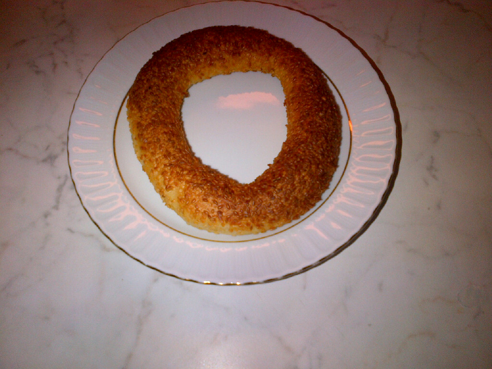

KURUMSAL TEDARİK MODELİ
Okul, bayi, otel ve zincir işletmelere düzenli fırın ürünleri tedariki
Ürün standardı, planlı teslimat ve raporlanabilir sipariş düzeni isteyen işletmeler için daha net, daha kurumsal ve daha güven veren bir sayfa yapısı.

KATALOG
Kurumsal alımda en çok tercih edilen ana kategoriler
Simit, poğaça, açma ve sabah satışı güçlü ana ürünler.
Gramajı sabit, standart kullanıma uygun pratik alternatifler.
Etkinlik, toplantı ve okul kullanımı için yüksek adetli üretim.
HİZMET VERİLEN ALANLAR
Çok noktalı operasyonlara uygun planlı çalışma yapısı
Özellikle günlük siparişten çok düzenli tüketimi olan işletmeler için daha kontrollü bir tedarik modeli sunuyoruz.
Okul kantinleri
Otel kahvaltı servisleri
Zincir kafeler
Akaryakıt istasyonları
Hastane kafeteryaları
Kurumsal yemekhaneler
TEDARİK SÜRECİ
Net adımlarla yürüyen daha tahmin edilebilir bir model
Nokta başı tüketim, ürün grubu ve teslim günü belirlenir.
Ürün tipi, gramaj ve servis beklentisi netleştirilir.
Takvimli üretim ve sevkiyatla düzenli çalışma başlatılır.
KURUMSAL TEKLİF